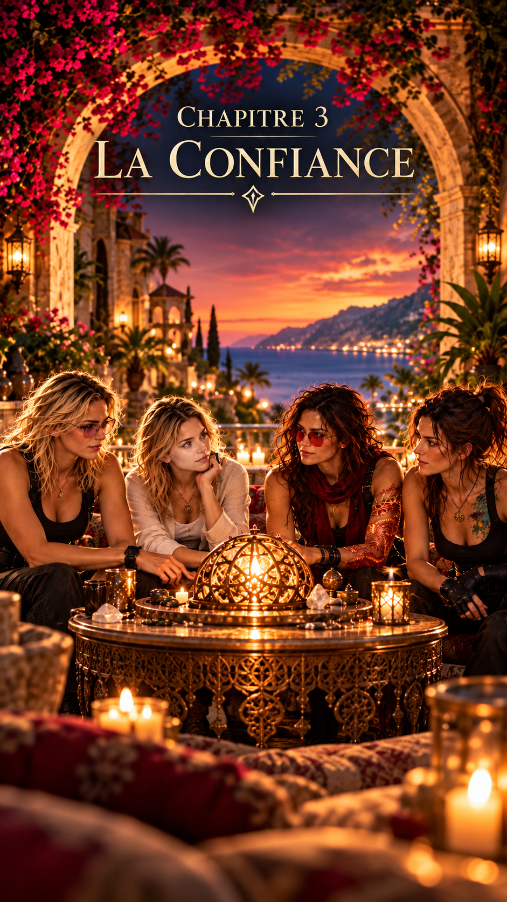
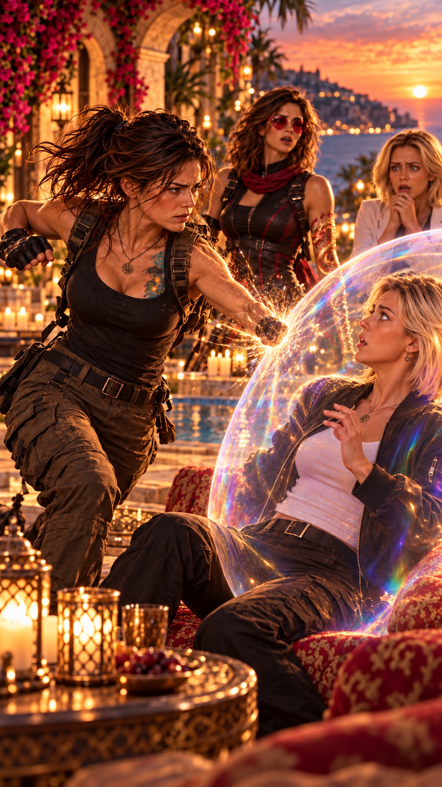
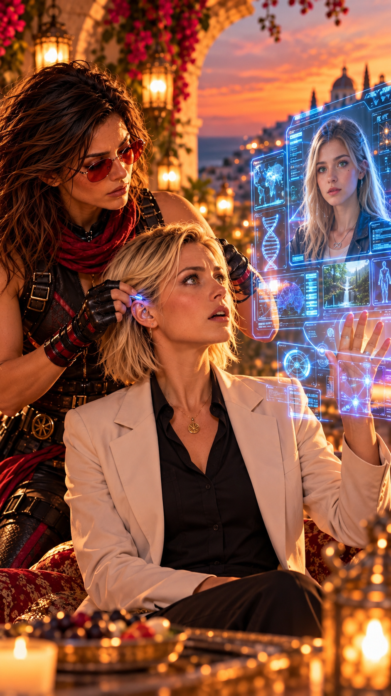
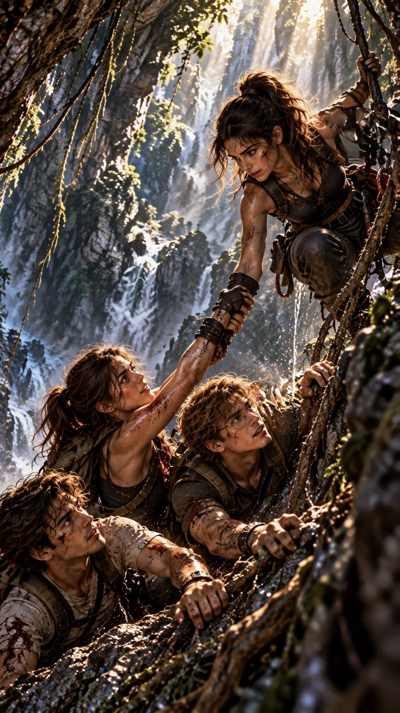
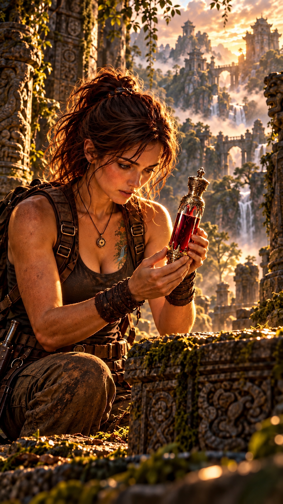

Betty rentre du laboratoire et demande immédiatement à voir sa fille.
— Hale, où est Anna ?
— Elle est en sécurité, Madame. Toujours avec votre sœur, à l’hacienda Awake.
Betty s’arrête.
— Elles sont encore là-bas ?
— Oui.
— Et comment pouvez-vous être certain qu’elles vont bien ?
Hale reste parfaitement calme.
— Parce que je le sais.
Cette réponse n’a rien de rassurant pour Betty.
Quelques minutes plus tard, elle monte dans son Range Rover et prend immédiatement la direction de l’hacienda Awake.
Betty doit-elle faire confiance à Hale ?
Sa réponse ne repose sur aucune preuve visible.
À son arrivée, Betty est immédiatement frappée par le niveau de sécurité de la propriété.
Des drones apparaissent presque silencieusement autour de son véhicule.
Ils l’analysent.
Quelques secondes passent.
Puis une voix annonce :
— Betty Flores. Généticienne et biologiste. Accès en cours de validation.
Betty fronce les sourcils.
— Charmant…
Quelques instants plus tard :
— Autorisation accordée. Bienvenue à l’hacienda Awake.
Le portail s’ouvre.
Betty s’engage dans la propriété.
Lorsqu’elle arrive devant l’entrée principale, James l’attend déjà.
— Bonjour, Mme Flores.
— Bonjour.
— Votre fille, Mme Adverse, Mme Tempass et Mme Awake vous attendent près de la piscine.
Il lui indique le chemin.
— Si vous voulez bien me suivre.
Betty le regarde brièvement.
— Vous saviez que j’arrivais ?
James esquisse un sourire.
— Ici, nous savons généralement qui entre avant même qu’il ne franchisse le portail.
Betty ne répond pas.
Cela ne la rassure pas davantage.
Analyser la sécurité
Lorsqu’elle approche de la piscine, elle découvre les quatre femmes installées ensemble.
Anna.
Lucy.
Root.
Hope.
Elles sourient.
Elles plaisantent.
Une étrange complicité semble déjà s’être installée entre elles.
Betty s’arrête quelques secondes.
Elle n’a pas vu Lucy aussi détendue depuis longtemps.
Et Anna semble rayonnante.
Sa fille lui fait immédiatement signe.
— Man ! Viens !
Betty s’approche.
Anna se lève.
— Je te présente officiellement Hope.
Puis elle désigne Root.
— Et Root, mais apparemment vous vous connaissez déjà.
Betty regarde l’archéologue.
— Root…
Un sourire sincère apparaît enfin sur son visage.
— Ça fait une éternité.
Root se lève et vient la saluer.
— Beaucoup trop longtemps.
Betty l’observe.
— Et tu n’as pratiquement pas changé.
Root sourit.
— Toi non plus.
Hope s’approche à son tour.
— Bonjour, Betty. Et bienvenue.
— Bonjour.
Betty lui tend la main.
— Je voulais surtout vous remercier personnellement pour ce que vous avez fait pour Anna.
Son expression redevient néanmoins plus prudente.
— Je vous en serai toujours reconnaissante.
Puis elle regarde Lucy et sa fille.
— Mais je crois qu’il est temps que nous rentrions.
Anna soupire immédiatement.
Lucy fait de même.
— Betty…
— Quoi ?
Anna et Lucy répondent presque en même temps :
— Assieds-toi.
Betty les regarde.
Anna sourit.
— Profite un peu de la vie.
Lucy ajoute :
— Pour une fois.
Betty croise les bras.
Hope intervient calmement.
— Il n’y a aucune raison de vous inquiéter.
Betty la regarde.
— Je n’en suis pas encore certaine.
— C’est justement pour cette raison que nous étions sur le point de discuter.
Hope lui indique un fauteuil.
— Lucy et Anna ont des questions.
Elle sourit légèrement.
— Et quelque chose me dit que vous en avez également quelques-unes.
Betty hésite.
Hope poursuit :
— Nous avons seulement posé une règle.
— Laquelle ?
— Aucun mensonge.
Betty arque un sourcil.
— C’est tout ?
— Presque.
Hope ajoute :
— Personne n’est obligé de répondre à une question. Mais si l’une de nous décide de répondre, alors elle dit la vérité.
Elle regarde chacune des femmes.
— Et ce qui est confié ici reste ici.
Betty laisse passer quelques secondes.
— Vous appelez ça un pacte ?
— Le mot est un peu théâtral.
Hope sourit.
— Disons plutôt un accord de confiance.
Betty observe Lucy.
Puis Anna.
Toutes deux semblent parfaitement à l’aise.
Accord de confiance
Betty accepte-t-elle de rester ?
Elle finit par s’asseoir.
— Très bien.
Hope acquiesce.
— Je vous préviens simplement d’une chose.
— Laquelle ?
— Avant de poser une question, assurez-vous de vouloir réellement entendre la réponse.
Betty la fixe.
Hope poursuit :
— La vérité n’est pas toujours celle que nous espérons.
— Mais elle reste la vérité.
Betty ne répond pas.
Anna intervient :
— Hope est la sœur du propriétaire du restaurant français qui a brûlé.
Betty se tourne brusquement vers elle.
Puis vers Hope.
— Ted Awake était votre frère ?
— Oui.
Le visage de Betty change.
— Je suis sincèrement désolée.
Elle poursuit :
— Anna et moi avons eu l’occasion de déjeuner dans son restaurant peu avant l’incendie.
Hope semble touchée.
— Alors vous avez connu une petite partie de son rêve.
— C’était un excellent restaurant.
— Merci.
Hope regarde un instant l’hacienda.
— Ted aimait profondément la cuisine.
Puis elle ajoute :
— C’est notamment pour cette raison que j’ai décidé de reconstruire ici.
Betty acquiesce.
Hope poursuit :
— Ce restaurant continuera ce qu’il avait commencé.
Elle marque une pause.
— Mais cette fois, personne ne viendra lui imposer une prétendue protection.
Betty relève immédiatement les yeux.
— Vous parlez du cartel Santalucibel.
— Oui.
— Vous comptez lui tenir tête ?
— Je compte simplement refuser de lui appartenir.
Betty secoue la tête.
— Vous ne savez pas à qui vous vous attaquez.
Hope la regarde calmement.
— Si.
— Non.
Betty insiste :
— Élie Santalucibel ne fonctionne pas comme un commerçant avec lequel on négocie.
Elle commence à s’agacer.
— Il détruit ce qui lui résiste.
Hope ne réagit pas.
Betty poursuit :
— Votre frère vient précisément d’en mourir.
Un silence tombe.
— Et vous voulez recommencer exactement au même endroit ?
Hope répond calmement :
— Non.
— Alors quoi ?
— Je veux faire en sorte que ce qui est arrivé à Ted ne devienne pas une règle.
Betty la fixe.
— Votre cause est peut-être noble.
Sa voix devient plus dure.
— Mais elle est dangereuse.
Puis elle regarde Anna.
— Et je refuse que ma fille se retrouve impliquée là-dedans.
Anna ouvre la bouche.
— Man…
— Non.
Betty se lève.
— Tu dis au revoir à Hope. Nous rentrons.
Hope reste assise.
— Betty.
— Quoi ?
— Ce n’est pas le fait de me fréquenter qui met Anna en danger.
Betty se fige.
— Pardon ?
Hope la regarde droit dans les yeux.
— La tentative d’enlèvement a eu lieu avant qu’Anna sache réellement qui j’étais.
Betty ne répond pas.
— Quelqu’un s’intéressait donc déjà à elle.
Un silence.
Cette fois, Betty écoute.
Reconstituer le danger
Hope poursuit :
— Et je pense que nous sommes toutes d’accord sur une chose : comprendre pourquoi est beaucoup plus important que chercher à l’éloigner de toutes les personnes susceptibles de l’aider.
Betty reste debout.
— Vous prétendez pouvoir la protéger ?
— Je dis seulement que sa sécurité peut être améliorée.
Lucy intervient :
— Sur ce point, elle n’a pas tort.
Betty regarde sa sœur.
— Toi aussi ?
Lucy hausse les épaules.
— Je ne dis pas que je lui fais confiance aveuglément.
Root sourit.
Lucy lui lance un regard.
— Mais leur système de sécurité est impressionnant.
Hope regarde Anna.
— Tu veux lui montrer ?
Anna sourit immédiatement.
— Oui.
Betty fronce les sourcils.
— Me montrer quoi ?
Hope se tourne vers Root.
— Doucement.
Root comprend.
Elle se lève et s’approche d’Anna.
Puis, sans prévenir, elle effectue un mouvement extrêmement rapide dans sa direction.
Betty sursaute.
— Root !

Test de protection
Mais avant même qu’elle puisse intervenir, quelque chose apparaît autour d’Anna.
Une fine enveloppe transparente semble se déployer autour de son corps.
Root s’arrête à quelques centimètres d’elle.
Anna n’a rien.
Betty reste bouche bée.
— Qu’est-ce que…
Anna regarde autour d’elle.
— C’est toujours aussi génial.
Betty se tourne brutalement vers Hope.
— Qu’est-ce que vous avez fait à ma fille ?
— Rien d’irréversible.
— Ce n’est pas une réponse !
Hope reste calme.
— C’est un dispositif de protection.
— Quel genre de dispositif ?
— Une technologie encore expérimentale.
Betty regarde Anna.
— Tu savais qu’elle t’avait équipée de ça ?
Anna hésite.
— Pas vraiment au début.
Betty ferme les yeux.
— Évidemment.
Hope poursuit :
— Anna peut le désactiver à tout moment.
— Comment ?
Anna sourit.
— Comme ça.
Elle touche légèrement sa tempe gauche.
La protection disparaît.
Puis elle recommence.
Elle réapparaît.
— C’est génial, Man.
Betty la regarde sévèrement.
— Tu n’es pas invincible.
Le sourire d’Anna diminue légèrement.
— Je sais.
— Et je refuse que qui que ce soit te fasse croire le contraire.
Hope acquiesce immédiatement.
— Sur ce point, nous sommes parfaitement d’accord.
Betty se tourne vers elle, surprise.
Hope poursuit :
— Cette protection peut arrêter beaucoup de choses.
— Pas toutes.
Elle regarde Anna.
— Et surtout, elle ne protège ni de la peur, ni de la manipulation, ni des conséquences psychologiques d’une agression.
Les limites du bouclier
Betty se calme légèrement.
— Au moins, nous sommes d’accord sur quelque chose.
— Sur beaucoup plus de choses que vous ne le pensez.
Hope poursuit :
— Nous voulons toutes les deux qu’Anna reste en vie.
Betty la regarde.
— Pourquoi ?
Hope ne répond pas immédiatement.
Anna observe les deux femmes.
Lucy également.
— Pourquoi êtes-vous autant concernée par ma fille ?
Hope réfléchit à ses mots.
— Parce que quelqu’un a essayé de l’enlever.
Betty attend.
— Et parce que certaines choses autour d’elle ne me semblent pas être le fruit du hasard.
Cette réponse ne satisfait évidemment pas Betty.
— Encore le destin ?
Hope sourit légèrement.
— Vous n’êtes pas obligée d’y croire.
— Je n’y crois pas.
— Alors appelons cela des probabilités exceptionnellement faibles.
Betty ne peut s’empêcher d’avoir un léger sourire.
— Là, vous commencez à parler ma langue.
Hope sourit à son tour.
Puis elle ajoute :
— Et il existe encore une chose que vous devriez savoir.
Elle regarde Anna.
— Avec ton accord ?
Anna acquiesce.
Hope reprend :
— J’ai également équipé Anna d’un système de communication.
Betty soupire.
— Évidemment.
— Un bio-téléphone holographique.
Cette fois, Betty se fige.
Elle regarde Hope.
— Comment connaissez-vous cette technologie ?
Hope ne répond pas tout de suite.
Betty se rapproche.
— Ce projet est confidentiel.
Elle insiste :
— Extrêmement confidentiel.
Hope garde son calme.
— Je sais.
— Vous ne devriez même pas connaître son existence.
Betty comprend soudain.
— Peter.
Hope ne répond toujours pas.
Le regard de Betty se durcit.
— Peter Evanos.
Anna regarde sa mère.
Lucy aussi.
Betty se tourne vers Hope.
— Qui êtes-vous exactement ?
Hope sourit légèrement.
— Décidément…
Elle regarde Root.
— C’est vraiment la question du jour.
Elle s’apprête à répondre lorsqu’un drone s’approche soudainement.
Hope tourne la tête.
Le dispositif s’immobilise devant elle.
— Excusez-moi une seconde.
Le drone s’immobilise à quelques mètres de Hope.
Elle se lève.
— Excusez-moi une minute.
Elle s’éloigne légèrement du groupe.
Betty observe attentivement la scène.
Hope échange quelques mots avec le drone, puis effectue un geste de la main.
Presque immédiatement, trois autres appareils apparaissent au-dessus de l’hacienda et viennent rejoindre le premier.
Hope leur transmet quelques instructions.
Les quatre drones repartent aussitôt dans des directions différentes.
Root observe Hope.
Lorsque celle-ci revient vers elles, leurs regards se croisent.
Une interrogation silencieuse passe entre les deux femmes.
Hope lui adresse un léger signe de tête.
Tout va bien.
Root se détend.
Hope reprend place.
— Où en étions-nous ?
Betty n’a rien oublié.
— Au bio-holophone.
Hope sourit.
— Évidemment.
Betty se penche légèrement vers elle.
— Cette technologie est extrêmement coûteuse, protégée et connue d’un nombre très restreint de personnes.
Elle désigne Anna.
— Et surtout, chaque appareil demande normalement un temps considérable pour être individualisé.
Son regard devient plus dur.
— Donc soit vous m’avez caché une partie de ce que vous savez…
Elle marque une pause.
— … soit ce que porte ma fille n’est pas le dispositif que je connais.
— Les deux réponses contiennent une part de vérité.
Betty fronce immédiatement les sourcils.
Hope poursuit :
— Vous connaissez la première génération.
Elle désigne discrètement l’oreille de Betty.
— Celle que vous utilisez encore.
Betty se fige.
Hope sourit.
— Peter a beaucoup travaillé depuis.
— Peter…
Betty ferme brièvement les yeux.
— Bien sûr.
Hope ajoute :
— La nouvelle génération se calibre presque seule sur son utilisateur. Quelques secondes suffisent pour une adaptation de base. Le système poursuit ensuite son ajustement biologique progressivement.
Betty semble soudain beaucoup plus intéressée.
— Ça, par contre…
Elle réfléchit.
— C’est possible.
Hope sourit.
— Vous voyez ? Tout n’est pas impossible.
Betty lui lance un regard.
— Ne prenez pas trop vite de mauvaises habitudes.
Hope rit.
— Voulez-vous essayer ?
Betty arque un sourcil.
— Sur moi ?
— Je peux remplacer votre ancienne version par la nouvelle.
Betty hésite.
— Et je pourrai l’examiner ensuite ?
— Autant que vous le souhaitez.
— Alors faites.
Hope se rapproche.
— La suppression de l’ancien dispositif risque d’être un peu désagréable.
— J’ai connu pire.
Hope travaille rapidement derrière son oreille.
Betty serre légèrement les mâchoires mais ne bouge pas.
Quelques secondes plus tard, Hope recule.
— Terminé.
Betty la regarde, presque vexée.
— Déjà ?
— Essayez.
Comprendre la nouvelle génération

Bio-holophone
Betty porte son index à son oreille gauche.
Puis elle effectue instinctivement la séquence qu’elle connaît : son petit doigt touche sa paume avant que sa main ne s’ouvre.
Un hologramme apparaît.
Anna.
Parfaitement net.
Betty ne dit plus rien.
Elle teste plusieurs commandes.
L’image réagit immédiatement.
La qualité de transmission est supérieure.
Le délai presque inexistant.
Même les paramètres biologiques de connexion semblent plus stables.
Betty referme brusquement sa main.
L’hologramme disparaît.
Elle regarde Hope.
— Peter.
Hope retient difficilement son sourire.
— Peter.
— Je vais le tuer.
Root éclate de rire.
Anna également.
— Maintenant…
Betty se rapproche de Hope.
— Vous avez toute mon attention.
Puis elle ajoute :
— Et ma curiosité vient officiellement d’atteindre un niveau dangereux.
Hope sourit.
— Je suis, entre autres choses, une amie de Peter.
Betty la regarde.
— Ce qui, actuellement, n’est franchement pas un argument en votre faveur.
— J’avais cru comprendre.
Hope ajoute avec amusement :
— Peut-être pourrions-nous également devenir collaboratrices un jour.
Elle réfléchit.
— Et qui sait ? Peut-être même amies.
Betty sourit légèrement.
— Vous allez vite.
— Je vous préviens simplement d’une chose.
— Laquelle ?
Hope la pointe du doigt.
— Je ne serai jamais l’un de vos cobayes.
Betty éclate de rire.
— Mon cobaye ?
Puis elle secoue la tête.
— Pour attirer réellement mon intérêt scientifique à ce point-là, il faudrait déjà que vous soyez hors du commun.
Elle regarde Anna.
— Et à l’heure actuelle, la seule personne véritablement hors du commun à mes yeux, c’est ma fille.
Anna sourit.
Betty poursuit immédiatement :
— Et elle n’a jamais été et ne sera jamais mon cobaye.
Hope ne répond pas tout de suite.
Puis elle sourit mystérieusement.
— Je vous rappellerai cette phrase le moment venu.
Betty la fixe.
— Pourquoi ?
— Plus tard.
— Ça commence déjà.
Hope rit.
— Vous venez pourtant de me démontrer vous-même qu’une bonne question ne doit être posée que lorsqu’on est prête à entendre la réponse.
Betty reconnaît le coup.
— Un point pour vous.
Elle s’installe plus confortablement.
— Mais puisque nous parlons de confiance…
Son expression devient plus sérieuse.
— Une véritable amitié repose sur une confiance mutuelle.
Hope acquiesce.
— Elle ne s’offre pas immédiatement.
— Exactement.
Betty poursuit :
— Elle se construit lentement. Avec du temps. Des preuves. De la loyauté.
Puis elle ajoute :
— Et elle peut disparaître en quelques secondes.
— Là-dessus, nous sommes parfaitement d’accord.
Hope s’assoit face à elle.
— Alors commençons correctement.
Elle sourit.
— Vous vouliez savoir qui je suis.
— Exactement.
— Je peux vous raconter une partie de mon histoire.
Hope regarde successivement Betty, Lucy et Anna.
— Mais tout ne vous paraîtra pas immédiatement rationnel.
Betty ouvre la bouche.
Hope la devance.
— Je sais.
Elle sourit.
— Vous allez prononcer le mot « impossible ».
Anna rit.
Betty secoue la tête.
Hope reprend :
— Je ne vous demande pas de croire aveuglément ce que je vais raconter.
Cette fois, Lucy semble apprécier la formulation.
— Je vous demande simplement de ne pas rejeter une information uniquement parce qu’elle ne correspond pas encore à ce que vous connaissez du monde.
Betty réfléchit.
— Un doute raisonnable positif ?
— Exactement.
Lucy intervient :
— Ça, elle peut faire.
— Merci pour ta confiance.
Puis Hope change légèrement de ton.
— Avant cela… vous viendrez samedi à l’inauguration ?
Betty regarde Anna.
La réponse est pratiquement déjà donnée.
— Très certainement.
Anna sourit immédiatement.
— Yes !
Betty ajoute :
— Ma sœur sera évidemment avec nous.
Hope acquiesce.
— Naturellement.
— Et son ami Clive également, si ça ne vous pose aucun problème.
Hope sourit.
— Clive Lynx ?
Lucy tourne immédiatement la tête vers elle.
— Vous le connaissez ?
Hope répond simplement :
— De réputation.
Root prend un air innocent.
— Le Magicien.
Lucy lui lance un regard.
Root poursuit :
— Un Magicien et une agente de la cybercriminalité…
Elle sourit.
— Sacré couple.
— Duo.
— Pardon ?
Lucy insiste :
— Duo.
— Bien entendu.
Root affiche un sourire beaucoup trop satisfait.
Lucy la fusille du regard.
Betty éclate de rire.
Anna également.
Puis Betty attire sa fille près d’elle et s’installe confortablement dans la banquette.
— Très bien.
Elle regarde Hope.
— Je vous écoute.
Hope reste silencieuse quelques secondes.
Puis elle commence.
— Mon nom de naissance n’est pas Hope Awake.
Lucy devient immédiatement attentive.
— Mon véritable nom est Hope Lynattendu.
Betty ne réagit pas.
Anna, elle, écoute avec fascination.
— Awake est le nom de la famille qui a recueilli puis adopté mon frère Ted après la disparition de notre famille.
Hope prend une inspiration.
— Officiellement, je suis morte.
Silence.
— Plus précisément, je suis portée disparue et présumée morte depuis le crash de l’avion dans lequel je voyageais avec mes parents, en Chine.
Lucy la fixe.
C’est exactement la piste retrouvée par IA2.
— J’avais douze ans.
Anna ne dit plus un mot.
Hope poursuit :
— L’appareil s’est écrasé dans une région isolée de Zhangjiajie.
Sa voix reste calme.
— Je ne sais pas combien de temps je suis restée inconsciente.
Elle regarde ses mains.
— Lorsque je me suis réveillée, ma vie d’avant avait disparu.
Elle marque une pause.
— Mes parents étaient morts.
Son regard se perd quelques secondes.
— Et le crash avait également touché une petite communauté qui vivait dans cette région, loin des routes et des circuits habituels.
Lucy intervient doucement :
— Une communauté qui n’apparaissait pas dans les rapports officiels.
Hope la regarde.
— Très peu.
Lucy comprend immédiatement pourquoi IA2 avait trouvé si peu de choses.
Reconstituer l’identité de Hope
Hope poursuit :
— Une autre enfant avait survécu.
Root baisse légèrement les yeux.
— Elle avait sensiblement mon âge.
Betty écoute maintenant avec beaucoup plus d’attention.
— Nous avons été retrouvées séparément.
Hope marque une pause.
— Et nos vies ont pris deux directions totalement opposées.
Anna demande doucement :
— Amy ?
Hope la regarde.
Un silence.
Puis :
— Oui.
Root observe Anna avec surprise.
Hope poursuit sans développer.
— J’ai été recueillie et soignée par une communauté dont l’existence n’est connue du monde extérieur qu’à travers quelques récits, quelques traces et beaucoup de légendes.
— Les Sentinelles de la Lumière ? demande Anna.
— Oui.
Hope sourit légèrement.
— Eux se désignent comme les Lumsenti.
Elle ajoute :
— Dans leur langue, ce nom renvoie à l’idée de ceux qui veillent dans la lumière.
Lucy retient immédiatement le détail.
— Et Amy ?
Hope hésite.
— Elle a été recueillie ailleurs.
Son expression change.
— Par ceux que nous appelons aujourd’hui les Gardiens Noirs.
Anna allait poser une nouvelle question.
Hope lève doucement une main.
— Pas encore.
Anna comprend.
— D’accord.
Deux survivantes, deux chemins
— J’ai grandi auprès des Lumsenti.
Hope poursuit :
— Maître Lee m’a soignée, éduquée et entraînée.
— Le maître des Sentinelles ? demande Betty.
— Oui.
— Et vous êtes devenue comme lui ?
Hope sourit.
— Pas exactement.
Root intervient :
— Elle minimise.
Hope lui lance un regard.
— Je raconte mon histoire.
— Alors raconte-la correctement.
Hope soupire avec amusement.
— À vingt-quatre ans, j’ai achevé les épreuves qui permettent d’accéder au rang le plus élevé de leur enseignement.
Lucy réfléchit.
— Maître Sentinelle.
— Entre autres titres.
Root ajoute :
— Maître Unique.
Hope soupire.
— Je savais que je n’aurais pas dû te laisser parler.
Anna rit.
Hope poursuit :
— J’ai passé une grande partie de ma vie loin du monde que vous connaissez.
— C’est pour cela que vous n’existez pratiquement pas dans les bases de données, dit Lucy.
Hope regarde Lucy.
— Tu avais déjà trouvé le crash.
Ce n’est pas une question.
Lucy ne ment pas.
— Oui.
— Et la fillette disparue ?
— Oui.
Hope acquiesce.
— Alors maintenant tu sais pourquoi.
Lucy reste silencieuse.
Pour la première fois depuis le début de son enquête, une partie du puzzle vient réellement de prendre forme.
Confirmer l’enquête de Lucy

Hope poursuit :
— Je n’avais pas encore vingt-quatre ans lorsque j’ai rencontré Root, Peter et Max.
Anna se redresse brusquement.
Mais elle se retient.
Root sourit en la voyant faire.
Hope poursuit :
— Ils étaient jeunes.
Root intervient aussitôt :
— Et particulièrement idiots.
— Je voulais rester polie.
— Moi pas.
Tout le monde rit.
Root reprend :
— Nous terminions nos études.
Elle regarde Hope.
— Et quand elle dit qu’elle nous a « rencontrés », elle oublie un petit détail.
Hope soupire.
— Root…
— Elle nous a sauvé la vie.
Lucy devient immédiatement attentive.
Root continue :
— Tous les trois.
— Qu’est-ce qui s’était passé ? demande Anna.
Root s’installe mieux.
— Nous étions partis dans une région où nous n’aurions probablement jamais dû aller.
Hope ajoute :
— Certainement jamais dû aller.
— Nous nous sommes perdus.
Root sourit.
— Puis nous sommes tombés dans un gouffre.
Lucy réfléchit.
Elle connaît cette histoire.
— Attendez…
Tout le monde la regarde.
— Trois étudiants disparus dans la région de Zhangjiajie.
Root sourit.
— Je savais qu’elle finirait par retrouver ça.
Lucy poursuit :
— Les médias avaient parlé de vous pendant des jours.
Elle regarde Root.
— Les autorités pensaient même que vous étiez morts.
— Nous avons failli l’être.
Lucy se tourne vers Hope.
— Et vous les avez trouvés.
— Oui.
Root reprend :
— Elle a fait beaucoup plus que ça.
Son ton devient plus sérieux.
— Hope nous a soignés.
— Elle nous a appris à survivre.
— À observer réellement ce qui nous entourait.
Puis elle sourit légèrement.
— Et surtout, elle nous a obligés à réfléchir à ce que nous voulions faire de nos vies.
Hope secoue la tête.
— Je n’ai rien décidé à votre place.
— Justement.
Root regarde Lucy.
— Elle ne nous a jamais dit quoi devenir.
— Elle nous a appris à comprendre pourquoi nous voulions devenir quelque chose.
Un silence.
— Peter n’était pas encore le Peter Evanos que tout le monde connaît.
— Max n’était pas encore le reporter que tu admires tant.
Anna ne tient plus.
— Max Speedman ?
Root éclate de rire.
— Oui.
Les yeux d’Anna s’agrandissent.
— LE Max Speedman ?
Lucy intervient :
— Anna…
— Quoi ? C’est Max Speedman !
Hope rit.
— Il sera là samedi.
Anna reste figée.
— Ici ?
— Oui.
— Samedi ?
— Oui.
Anna regarde immédiatement Betty.
— Man, même si l’hacienda prend feu, je viens samedi.
Betty lève les yeux au ciel.
— Nous reparlerons de cette formulation.
Le rire détend momentanément l’atmosphère.
Puis Lucy revient au sujet.
— Vous avez donc passé plusieurs jours ensemble.
Root acquiesce.
— Douze.
Elle regarde Hope.
— Douze jours qui ont changé toute notre vie.
Hope baisse légèrement les yeux.
Root poursuit :
— Elle a désobéi aux siens pour nous aider.
Hope ne corrige pas.
— Elle nous a ramenés jusqu’à un endroit où les secours pouvaient nous retrouver.
— Et nous avons promis de ne jamais révéler son existence.
Lucy regarde Root.
— Et vous avez tenu cette promesse pendant toutes ces années.
— Toujours.
Root répond sans hésiter.
Hope la regarde avec une affection évidente.
Reconstituer la disparition
Lucy réfléchit.
— Mais pourquoi étiez-vous là-bas au départ ?
Cette fois, Hope tourne les yeux vers Root.
Root ne répond pas immédiatement.
Hope demande doucement :
— C’est ton histoire.
Root acquiesce.
— Tu peux.
Hope reprend.
— Root cherchait quelque chose.
Anna se tourne immédiatement vers elle.
— Un objet ?
— Oui.
Root sourit légèrement.
— Une obsession de gamine.
Hope poursuit :
— Lorsqu’elle était enfant, Root avait trouvé une pierre portant plusieurs symboles qu’elle n’avait jamais réussi à identifier.
Root intervient :
— Pendant des années, j’ai essayé de comprendre ce qu’ils signifiaient.
— Et tu as réussi ?
— En partie.
Root regarde Anna.
— Assez pour me convaincre qu’ils indiquaient l’existence d’un objet ancien.
Lucy demande :
— Quel objet ?
Root hésite.
Puis elle répond :
— Une fiole.
Betty ne bouge plus.
Hope l’a remarqué.
Lucy aussi, peut-être.
Anna, elle, reste concentrée sur Root.
— Une simple fiole ?
Root sourit.
— Je pensais à l’époque qu’elle était tout sauf simple.
Hope poursuit :
— Nous l’avons retrouvée.
Betty baisse lentement les yeux.
Hope ne la quitte pas du regard.
— Root l’a conservée pendant plusieurs années.
Root reprend :
— Jusqu’au jour où j’ai rencontré quelqu’un dont les compétences scientifiques pouvaient peut-être enfin m’aider à comprendre ce que j’avais trouvé.
Suivre la quête de Root

Betty sait déjà où cette histoire conduit.
Hope s’arrête.
Elle regarde Root.
Puis Betty.
Et elle comprend quelque chose à l’expression de la généticienne.
Root demande doucement :
— Betty ?
Anna tourne la tête vers sa mère.
Betty relève lentement les yeux.
Son visage a changé.
Hope ne dit rien de plus.
Elle n’en a pas besoin.
Betty vient de comprendre.
Elles parlent de la fiole.
De sa fiole.
De celle que Root lui avait confiée plus de vingt ans auparavant.
Et de celle dont Betty n’avait jamais révélé ce qu’elle avait réellement fait.
Ce que Betty vient de comprendre
Betty reste silencieuse quelques instants.
Son regard passe de Root à Hope.
Puis elle demande :
— Comment avez-vous su que vous pouviez leur faire confiance à tous les trois ?
Hope relève légèrement les yeux.
— À Root, Peter et Max ?
— Oui.
Betty poursuit :
— Vous veniez à peine de les rencontrer. Pourtant vous leur avez confié votre existence, celle des Sentinelles et probablement beaucoup d’autres choses.
Elle marque une pause.
— Comment pouviez-vous être certaine qu’ils respecteraient votre pacte ?
Puis elle ajoute :
— Et pourquoi avoir décidé, des années plus tard, de « revenir à la vie », comme vous dites ?
Un léger sourire apparaît au coin des lèvres de Hope.
— Si je vous réponds que je l’ai vu dans leurs yeux, vous allez probablement me prendre pour une illuminée.
Betty sourit.
— Probablement.
Anna étouffe un rire.
Hope poursuit :
— Pourtant, nous révélons beaucoup plus de choses par notre regard que nous ne l’imaginons.
Elle regarde brièvement Root.
— Mais non, je ne me suis pas contentée de mon intuition.
Betty devient immédiatement attentive.
— J’ai vérifié.
— Comment ?
Hope tend sa propre main.
— À l’époque, lorsque nous avons finalement été en sécurité, j’ai posé ma main sur l’intérieur de leur poignet droit.
Root comprend.
Elle remonte lentement sa manche.
La marque de Root
Lucy se penche légèrement.
Anna également.
Sur l’intérieur du poignet de Root apparaît une marque étrange.
Un cercle presque parfaitement intégré à sa peau.
De fins symboles semblent surgir des profondeurs de la chair, comme un trompe-l’œil impossible.
Au centre, une ligne lumineuse aux reflets multicolores traverse le motif.
Betty se rapproche.
— C’est un tatouage ?
— Non, répond Root.
Hope poursuit :
— Cette marque ne se dessine pas.
— Elle se révèle.
Lucy observe immédiatement le symbole.
— Et ils avaient tous les trois la même ?
Hope réfléchit.
— La même origine.
Elle insiste sur le mot.
— Pas nécessairement la même signification.
Root rabaisse doucement sa manche.
Hope poursuit :
— Pour les Sentinelles, l’apparition de cette marque signifie qu’une personne appartient à une histoire beaucoup plus ancienne qu’elle ne le sait elle-même.
Anna fronce les sourcils.
— Donc Root, Peter et Max étaient déjà liés aux Sentinelles sans le savoir ?
Hope sourit.
— Disons plutôt que leurs chemins pouvaient un jour les conduire jusqu’à nous.
Betty remarque immédiatement la nuance.
— Ce n’est pas exactement la même chose.
— Non.
Hope sourit.
— Et cette différence est importante.
Comprendre la marque
Anna semble vouloir poser une autre question.
Betty lève une main.
— Je crois que nous aurons déjà beaucoup de choses à digérer ce soir.
Root rit.
— Pour une fois, je suis d’accord avec Betty.
Puis elle reprend :
— Et puisque nous parlons de notre rencontre, il y a quelque chose que je dois rectifier.
Elle regarde Lucy.
— Les médias ont raconté une version très simplifiée de notre disparition.
— Étonnant, répond Lucy avec ironie.
Root sourit.
— Max et moi étions déjà partis ensemble en Chine.
Anna se redresse immédiatement.
— Avec Max Speedman ?
— Avec le futur Max Speedman.
Root poursuit :
— À cette époque, il n’était encore qu’un étudiant particulièrement curieux, persuadé que certaines communautés vivant en marge du monde moderne pouvaient malgré tout exercer une influence considérable sur lui.
Hope sourit.
— Il avait déjà besoin de comprendre ce que personne ne regardait.
Root acquiesce.
— Et il était déjà obsédé par les conséquences disproportionnées que pouvait provoquer un événement apparemment insignifiant.
Anna intervient :
— L’effet papillon.
Root la regarde.
— Exactement.
Anna sourit.
— Un petit événement peut entraîner une chaîne de conséquences gigantesques.
— C’est l’idée.
Root ajoute :
— Même si Max avait tendance à l’appliquer absolument partout.
Hope éclate de rire.
— Absolument partout.
L’effet papillon selon Max
Root reprend :
— Moi, j’étais venue pour quelque chose de beaucoup moins raisonnable.
Lucy sourit.
— La fiole.
— La fiole.
Root réfléchit quelques secondes.
— Lorsque j’étais enfant, j’avais découvert une pierre portant des symboles que personne autour de moi ne connaissait.
— La pierre dont vous parliez tout à l’heure ? demande Anna.
— Oui.
— Et vous l’avez gardée ?
— En secret.
Root poursuit :
— Pendant des années, j’ai essayé de comprendre ces inscriptions.
— Jusqu’à ce que tu réussisses ?
Root sourit.
— Jusqu’à ce que je réussisse à en comprendre suffisamment pour devenir complètement obsédée.
Hope intervient :
— Voilà une description beaucoup plus honnête.
Root lui lance un regard.
— Les inscriptions évoquaient une ancienne légende.
Elle hésite.
— Une source.
— La Source de Vie ? demande Anna.
Hope et Root échangent un regard.
Root répond prudemment :
— Peut-être.
Elle poursuit :
— La pierre parlait aussi d’un objet associé à cette légende.
— La fiole.
— Oui.
Root regarde Betty une fraction de seconde.
— Et elle faisait allusion à deux forces opposées, présentes depuis très longtemps dans l’histoire humaine.
Lucy intervient :
— Les Sentinelles de la Lumière et les Gardiens Noirs.
— C’est ce que nous avons compris plus tard.
Root poursuit :
— Quant à Peter, nous l’avons rencontré peu avant notre départ vers la région que les médias ont ensuite surnommée la Forêt des Âmes Perdues.
Hope commence déjà à sourire.
Root aussi.
— Il nous a plu immédiatement.
— C’est inquiétant, remarque Lucy.
— Ça l’était.
Root rit.
— Il avait des milliers d’idées à la minute, une imagination incroyable et absolument aucune idée de la façon dont il allait en réaliser la moitié.
Hope ajoute :
— Et suffisamment de confiance en lui pour être persuadé que ça finirait forcément par fonctionner.
— Exactement.
Root poursuit :
— Il était aussi ingénieux que complètement allumé.
Anna rit.
— Donc forcément…
— Forcément, nous sommes devenus amis.
Root hausse les épaules.
— Et il nous a accompagnés.
Lucy secoue lentement la tête.
— Trois étudiants brillants, beaucoup trop curieux, qui partent chercher une légende dans une région isolée de Chine.
— Présenté comme ça, reconnaît Root…
— C’était une idée catastrophique.
— Complètement.
— Et vous êtes tombés dans un gouffre.
— Aussi.
Tout le monde éclate de rire.
Root poursuit :
— Et c’est ainsi que nous avons rencontré Hope.
Son expression devient plus douce.
— Depuis ce jour, Peter, Max et moi sommes devenus comme les doigts d’une même main.
Elle regarde Hope.
— Et elle en fait partie, même si elle prétend régulièrement le contraire.
— Je n’ai jamais prétendu le contraire.
— Tu le penses très fort.
Hope sourit.
Root poursuit :
— Nous avons choisi des vies différentes.
— Nous vivons parfois à des milliers de kilomètres les uns des autres.
— Nous pouvons rester longtemps sans nous voir.
Puis elle ajoute simplement :
— Mais si l’un de nous appelle, les autres viennent.
Un petit silence suit cette phrase.
Anna sourit.
— Des inséparables.
Root acquiesce.
— À notre manière.
Puis elle regarde Betty.
— Maintenant que nous venons de raconter une partie plutôt conséquente de notre vie…
Elle tourne la tête vers Lucy et Anna.
— Vous savez énormément de choses sur nous.
Puis elle revient vers Betty.
— Et toi, par exemple, tu ne m’avais jamais dit que tu avais une sœur.
Lucy lève les yeux au ciel.
Betty sourit.
— Tu sais parfaitement que je n’ai jamais été très communicative.
— C’est un euphémisme.
— Et c’est probablement l’une des raisons pour lesquelles tu m’as confié cette fameuse fiole.
Root ne répond pas.
Betty poursuit :
— Nous nous sommes rapprochées parce que nous excellions toutes les deux dans nos domaines.
Elle sourit.
— Enfin… parce que nous étions toutes les deux complètement obsédées par notre travail.
— Ça aussi, c’est plus honnête.
— Nous nous respections énormément.
Betty poursuit :
— Mais nous n’avons jamais réellement pris le temps d’apprendre à nous connaître autrement que par nos recherches.
Elle regarde toutes les femmes autour de la table.
— Peut-être que cela va changer.
Root lui sourit.
Ce qui unit réellement le groupe
Puis Betty revient vers Hope.
— Cela dit…
Hope reconnaît immédiatement son expression.
— Encore une question.
— Évidemment.
Betty sourit.
— Je reste persuadée que vous savez beaucoup plus de choses sur nous trois que vous ne voulez bien l’admettre.
— Sur vous, Lucy et Anna ?
— Oui.
Hope réfléchit.
— Certaines.
— Grâce à Peter ?
— Entre autres.
Betty acquiesce.
— Voilà.
Elle poursuit :
— Nos vies sont relativement publiques. La vôtre, au contraire, ressemble à un gigantesque trou noir administratif.
Lucy approuve silencieusement.
— Donc pour le moment, j’ai surtout l’impression que nous découvrons beaucoup de choses sur vous pendant que vous disposez déjà d’une belle longueur d’avance sur nous.
Hope sourit.
— C’est possible.
— Seulement possible ?
— Pacte de confiance, Betty.
Hope lui adresse un regard amusé.
— Je ne viens pas de mentir.
Betty ne peut s’empêcher de rire.
Puis elle regarde l’heure.
— Il commence à se faire tard.
Anna proteste immédiatement.
— Man…
— Nous reviendrons samedi.
Anna retrouve son sourire.
— Promis ?
— Promis.
Betty se lève.
— Merci pour votre accueil.
Elle regarde Hope.
— Et pour vos réponses.
Puis elle ajoute :
— Même si je repars avec deux fois plus de questions qu’en arrivant.
Hope sourit.
— Alors notre conversation a probablement été utile.
Lucy se lève à son tour.
Root lui adresse un regard.
— N’oublie pas.
— Quoi ?
— Le dîner.
Lucy sourit.
— Et la confidence.
Root soupire.
— Évidemment.
Anna se tourne vers Hope.
— Et samedi, Max est vraiment là ?
— Vraiment.
— Alors vous ne vous débarrasserez pas de moi.
— Je commence à le comprendre.
Les femmes se saluent.
Quelques minutes plus tard, Betty, Anna et Lucy quittent l’hacienda Awake et reprennent la direction de l’hacienda Flores.
Hope et Root restent seules.
Pendant près d’une heure, elles reparlent de cette étrange journée.
De Lucy.
De Betty.
Et surtout d’Anna.
Root regarde son amie.
— Elle t’intrigue.
Hope ne répond pas immédiatement.
— Beaucoup de choses m’intriguent.
Root sourit.
— Ce n’est pas ce que j’ai dit.
Hope tourne les yeux vers elle.
Root n’insiste pas.
Un bruit lointain finit par attirer leur attention.
Puis trois drones apparaissent au-dessus de la propriété.
Hope les reconnaît immédiatement.
Elle sourit.
— Ils sont enfin là.
Root lève les yeux vers les appareils.
— Peter.
— Évidemment.
Quelques instants plus tard, un véhicule franchit les contrôles de l’hacienda.
À son bord se trouvent deux hommes qu’elles n’ont pas vus depuis trop longtemps.
Peter Evanos.
Max Speedman.
Et devant eux volent les trois drones chargés de les surveiller depuis leur arrivée au Mexique.
Root sourit.
Hope également.
Le cercle continuait à se refermer.